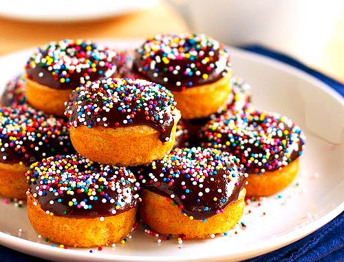
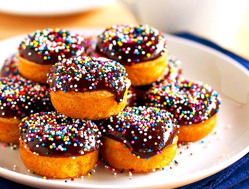

Urban Foodie
Urban foodie plays a major role in the food delivery services in india. It is one of the fastest food delevering websites.
Urban foodie plays a major role in the food delivery services in india. It is one of the fastest food delevering websites.
We are passionate about becoming the number one food ordering company in the world and in every neighbourhood.
Our relentless focus on growth sees us introduce foods from various cuisines to more customers around the indian cities every day.
We deliver the best food to almost any place in the least possible time.